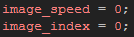
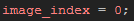
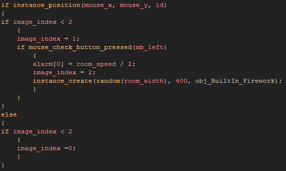

Tutorial
Page 2 of 12
Creating A Button
Before we go on and explain how to create your own particle effects from scratch, you should know that GameMaker:Studio also comes with it's own built in particle system that can create som interesting
effects that can be used quickly and easily in your games. So, to start with, we are going to make a button object that will control a built-in particle effect to make our first firework, and this button object will also
be the base for all other buttons that we are going to use in this tutorial.
Create a new object and assign it the button sprite indexed as "spr_Button_BuiltIn" and name the object itself "obj_Button_Builtin", then add a Create Event and in it place the following
code:

All this code does is stops the button from animating and makes sure the currently drawn frame is the first frame (sub-image 0). Now, add an Alarm[0] event too, and in that place this code:

The code above that we place in this alarm will be used to reset the image index (current sub-image chosen) of the sprite to 0, and in this way we can create a "hover" and "pressed" state, then set this alarm
to reset the button back to a "normal" state. This will be done by the following code, which is where we check the mouse position, check to see if the mouse has been pressed, and then create the firework object
itself:

So, that code will check to see if the mouse position coincides with the button mask, and if it does it checks the current button image_index and sets it to "hover" state if it has not been pressed. It then detects any
mouse presses and if there is one, it sets the image-index to 2 ("pressed" state"), sets alarm[0] to reset the state which permits it to be pressed again, and creates an instance of the object "obj_BuiltIn_Firework"
at a random position along the x-axis.
Note that this text is white in the editor because we haven't created the object yet! But we will on the next page, so close this button object and save your progress, then continue to make your first firework...
Click on the Next button to go to the next page of the tutorial.